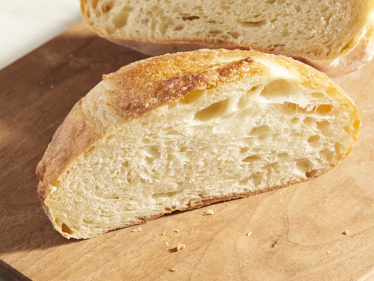

Ciabatta Bread

This ciabatta recipe is delicious! Take five minutes today to make the
starter, also called sponge, and tomorrow you can bake two loaves of this
marvelous, slightly sour, rustic Italian bread.
- 2 tablespoons warm water (110 degrees F/45 degrees C)
- ⅛ teaspoon active dry yeast
- 1 cup bread flour
- ⅓ cup warm water
- 2 tablespoons warm milk (110 degrees F/45 degrees C)
- ½ teaspoon active dry yeast
- 2 cups bread flour
- ⅔ cup warm water
- 1 tablespoon olive oil
- 1 ½ teaspoons salt
-
Make the sponge: Stir warm water and yeast together in a small bowl. Let
stand for 5 minutes, or until creamy.
-
Combine bread flour and warm water in a large bowl; stir in yeast
mixture for 4 minutes. Cover with plastic wrap and let sponge stand at
room temperature for at least 12 hours and up to 1 day.
-
Make the bread: Combine warm milk and yeast together in a small bowl.
Let stand for 5 minutes, or until creamy.
-
Transfer milk-yeast mixture to the bowl of a stand mixer fitted with a
dough hook. Add sponge, bread flour, warm water, and oil; blend until
flour is just moistened. Add salt and mix until dough is smooth and
elastic, about 8 minutes.
-
Scrape dough into an oiled bowl and cover with plastic wrap. Let dough
rise at room temperature until doubled in bulk, about 1 1/2 hours. The
dough will be sticky and full of air bubbles.
-
Turn dough out onto a well-floured work surface and cut in half.
Transfer each half to a parchment sheet and form into an irregular oval
about 9 inches long. Dimple loaves with floured fingers and dust tops
with flour. Cover loaves with a dampened kitchen towel. Let loaves rise
at room temperature until almost doubled in bulk, 1 1/2 to 2 hours.
-
At least 45 minutes before baking ciabatta, place a baking stone on the
oven rack in the lowest position in the oven; preheat the oven to 425 F
(220 degrees C).
-
Transfer 1 loaf on its parchment to a rimless baking sheet with a long
side of the loaf parallel to the far edge of the baking sheet. Line up
the far edge of the baking sheet with the far edge of the baking stone
in the preheated oven and tilt to slide the loaf with parchment onto the
back half of the stone. Transfer the remaining loaf to the front half of
the stone in a similar manner. Bake ciabatta loaves until just golden,
about 20 minutes. Cool loaves on a wire rack.